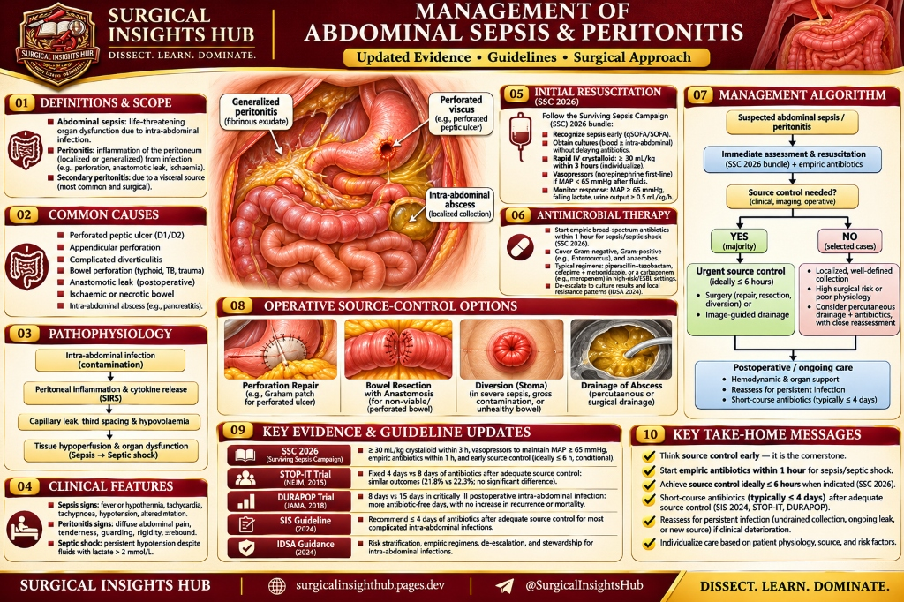

Abdominal Sepsis & Peritonitis: Source Control, STOP-IT, and the New Rules of Surgical Infection Management
The surgical principle is simple: antibiotics treat infection, but they cannot repair a perforated bowel or drain an undrained abscess.


Figure 1. Management of Abdominal Sepsis & Peritonitis (Surgical Insights Hub). Click the poster to inspect high-resolution diagrams, resuscitation bundles, and operative source-control pathways.
The management of complicated intra-abdominal infection has evolved. Modern evidence challenges prolonged antibiotic courses, emphasizes timely source control, and calls for more individualized hemodynamic resuscitation.
For the operating surgeon, the important question is no longer simply which antibiotic should we prescribe?
Section 01
Understanding Abdominal Sepsis
Secondary peritonitis results from contamination of the peritoneal cavity, commonly following gastrointestinal perforation, appendiceal rupture, anastomotic leakage, or bowel ischemia with necrosis.
Infection may remain localized or progress to diffuse peritonitis and organ dysfunction.
Sepsis is infection-associated, life-threatening organ dysfunction. Peritonitis alone does not automatically establish sepsis, and septic shock represents a more severe circulatory and metabolic disturbance.
The central pathophysiological sequence is:
Management must address both the systemic physiological disturbance and the intra-abdominal source.
Section 02
SSC 2026: What Matters to the Surgeon?
The 2026 Surviving Sepsis Campaign reinforces early treatment, with important distinctions according to clinical severity.
Initial Resuscitation Hemodynamics
- Start resuscitation immediately in patients with septic shock.
- For sepsis-induced hypoperfusion or septic shock, the guideline suggests at least 30 mL/kg of IV crystalloid during the first three hours, with frequent reassessment to avoid under- or over-resuscitation.
- Balanced crystalloids are generally preferred over normal saline.
- Norepinephrine remains the first-line vasopressor for septic shock, with an initial MAP target of approximately 65 mmHg.
- Use repeated clinical perfusion assessment, dynamic fluid responsiveness, and serial lactate measurements when indicated.
Antimicrobial Timing 1h vs 3h Window
- For septic shock or probable/definite sepsis, administer appropriate antimicrobials immediately, ideally within one hour.
- Possible sepsis without shock allows a short, structured diagnostic assessment; when concern persists, antibiotics should generally begin within three hours.
Source Control ≤ 6 Hours Target
- When an anatomical source requires intervention, SSC 2026 suggests source control ideally within six hours of diagnosing sepsis or septic shock requiring source control.
- This six-hour target is a conditional recommendation supported by very-low-certainty evidence, not a rigid rule that overrides immediate intervention in a deteriorating patient.
The Clinical Implication
Section 03
Source Control: The Operation That Changes the Outcome
Source control may require:
- Image-guided or operative drainage of infected collections.
- Closure or repair of gastrointestinal perforation.
- Resection of ischemic or necrotic bowel.
- Removal of an infected focus.
- Intestinal diversion when an anastomosis would be unsafe.
- Damage-control surgery with temporary abdominal closure in selected physiologically exhausted patients.
The operative strategy depends on disease location, contamination, tissue viability, hemodynamic stability, and the patient's ability to tolerate reconstruction.
A stable patient with viable bowel may undergo definitive resection and anastomosis. A severely unstable patient with diffuse contamination may require abbreviated surgery and delayed reconstruction.
Section 04
STOP-IT: The Trial That Challenged Prolonged Antibiotics
The landmark STOP-IT trial, published in the New England Journal of Medicine in 2015, randomized 518 patients with complicated intra-abdominal infection after adequate source control.
Two strategies were compared:
- Short course: Approximately four days of antibiotics.
- Conventional course: Approximately eight days, guided by resolution of physiological abnormalities.
Primary Composite Outcome
Primary Composite Outcome
Difference (n = 518)
The primary composite outcome—surgical-site infection, recurrent intra-abdominal infection, or death—occurred in 21.8% versus 22.3%, respectively (P = 0.92). There was no statistically significant difference.
What Did STOP-IT Establish?
In the studied population, continuing antibiotics until fever, leukocytosis, and ileus resolved did not improve the measured outcomes compared with a fixed short course.
However, the trial does not establish that four days is sufficient for every patient, particularly when source control is inadequate or important populations are underrepresented.
Section 05
DURAPOP: Does the Principle Apply to Critically Ill Patients?
The DURAPOP randomized trial, published in 2018, examined postoperative intra-abdominal infection in critically ill ICU patients. It compared eight versus fifteen days of antimicrobial treatment.
The eight-day group had more antibiotic-free days, without a statistically significant increase in mortality or recurrence.
| Landmark Trial | Patient Population | Duration Arms | Key Finding |
|---|---|---|---|
| STOP-IT NEJM, 2015 (n = 518) |
Complicated intra-abdominal infection after adequate source control | ~4 days (fixed) vs. ~8 days (until symptom resolution) | Composite outcome equivalent (21.8% vs 22.3%, P = 0.92). |
| DURAPOP Intensive Care Med, 2018 |
Critically ill ICU patients with postoperative intra-abdominal infection | 8 days vs. 15 days | More antibiotic-free days with 8 days; no significant increase in mortality or recurrence. |
The distinction matters: STOP-IT primarily established the feasibility of approximately four days after adequate source control in a broader complicated-infection population, whereas DURAPOP examined a different, more critically ill postoperative population and compared longer courses.
Section 06
SIS 2024 and Other Guideline Developments
The Surgical Infection Society's 2024 update recommends no more than four days of antimicrobials after adequate source control for complicated intra-abdominal infection. This is consistent with the direction established by STOP-IT and subsequent evidence.
The 2023 EAST practice management guideline also supports shorter treatment after definitive source control, based on a systematic review and meta-analysis.
Meanwhile, IDSA's 2024 update focuses on risk assessment, imaging, and microbiological evaluation. It should not be mistaken for a comprehensive replacement of all antimicrobial-duration guidance.
| Guideline Body | Primary Scope & Recommendation |
|---|---|
| SIS (2024 Update) | Recommends ≤ 4 days of antimicrobials after adequate source control for complicated intra-abdominal infection. |
| EAST (2023) | Supports shorter antimicrobial treatment after definitive source control based on systematic review and meta-analysis. |
| IDSA (2024 Update) | Focuses on risk stratification, diagnostic imaging, and microbiological evaluation (not a standalone replacement for duration guidance). |
Together, these publications emphasize three priorities:
- Obtain adequate source control.
- Select appropriate empirical therapy using patient-specific resistance risks and local microbiology.
- De-escalate and stop antimicrobials when their continued use is no longer supported.
Section 07
Persistent Sepsis After Surgery: What Should the Surgeon Investigate?
Persistent fever, leukocytosis, vasopressor requirements, or organ dysfunction should trigger a systematic reassessment. Potential causes include:
- Residual or inadequately drained abscess.
- Anastomotic leak or ongoing gastrointestinal perforation.
- Missed ischemic or necrotic bowel.
- Persistent biliary or pancreatic leakage.
- Resistant microorganisms or an alternative infectious source.
- Noninfectious causes of postoperative deterioration.
Sufficiently Stable Patient
Repeat contrast-enhanced CT may identify residual collections, anastomotic leakage, or an additional source requiring percutaneous or operative drainage.
Unstable Patient
When strong evidence points to ongoing surgical contamination, operative re-exploration may be necessary without delaying for imaging.
Section 08
The Surgical Insight Hub Perspective
Modern abdominal sepsis management is not simply about choosing broader antibiotics or performing a larger operation. It requires integrated judgment:
For surgeons working in resource-limited hospitals, the principles remain relevant. Limited access to CT, interventional radiology, ICU beds, or advanced laboratory tests makes serial clinical examination, timely referral, careful operative planning, and recognition of deterioration particularly important.
The safest approach is not always the most extensive operation. It is the intervention that achieves sufficient source control while respecting the patient's physiology.
📚 References
- 1. Surviving Sepsis Campaign. International Guidelines for Management of Sepsis and Septic Shock. Critical Care Medicine. 2026. https://doi.org/10.1097/CCM.0000000000007075
- 2. Sawyer RG, et al. Trial of Short-Course Antimicrobial Therapy for Intraabdominal Infection. New England Journal of Medicine. 2015;372:1996–2005. https://doi.org/10.1056/NEJMoa1411162
- 3. Montravers P, et al. Short-course antibiotic therapy for critically ill patients treated for postoperative intra-abdominal infection: the DURAPOP randomised clinical trial. Intensive Care Medicine. 2018. https://pubmed.ncbi.nlm.nih.gov/29484469/
- 4. Surgical Infection Society. Guidelines on the Management of Intra-Abdominal Infection: 2024 Update. Surgical Infections. 2024. https://pubmed.ncbi.nlm.nih.gov/38990709/
- 5. EAST. Duration of Antimicrobial Treatment for Complicated Intra-Abdominal Infections After Definitive Source Control. 2023. https://pubmed.ncbi.nlm.nih.gov/37316989/
- 6. IDSA. Clinical Practice Guideline Update on Complicated Intra-Abdominal Infections: Risk Assessment, Diagnostic Imaging, and Microbiological Evaluation. 2024. https://www.idsociety.org/practice-guideline/intra-abdominal-infections/